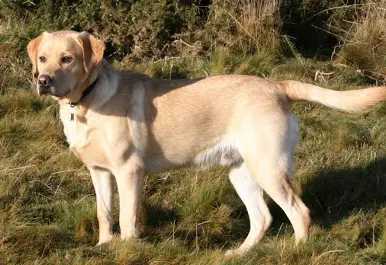

Labrador Retriever
The Labrador Retriever, also known simply as the Labrador or Lab, is a British breed of retriever gun dog. It was developed in the United Kingdom from St. John's water dogs imported from the colony of Newfoundland (now a province of Canada), and was named after the Labrador region of that colony. It is among the most commonly kept dogs in several countries, particularly in the Western world.Labradors are registered in three colours: Solid black, yellow (anything from creamy white to fox-red), and chocolate (medium to dark brown; originally called "liver").[15] Puppies of all colours can occur in the same litter. Coat colour is determined primarily by three genes, called MC1R, Agouti, and CBD103. If a dog carries wild type alleles at all three loci, the dog will have a yellow coat. If a dog has a loss-of-function mutation at MC1R, it will also have a yellow coat, regardless of the genotypes at the other two loci. Dogs carrying wild-type alleles for MC1R and Agouti, together with the black allele of CBD103, will have a black coat.[16][a]
learn more